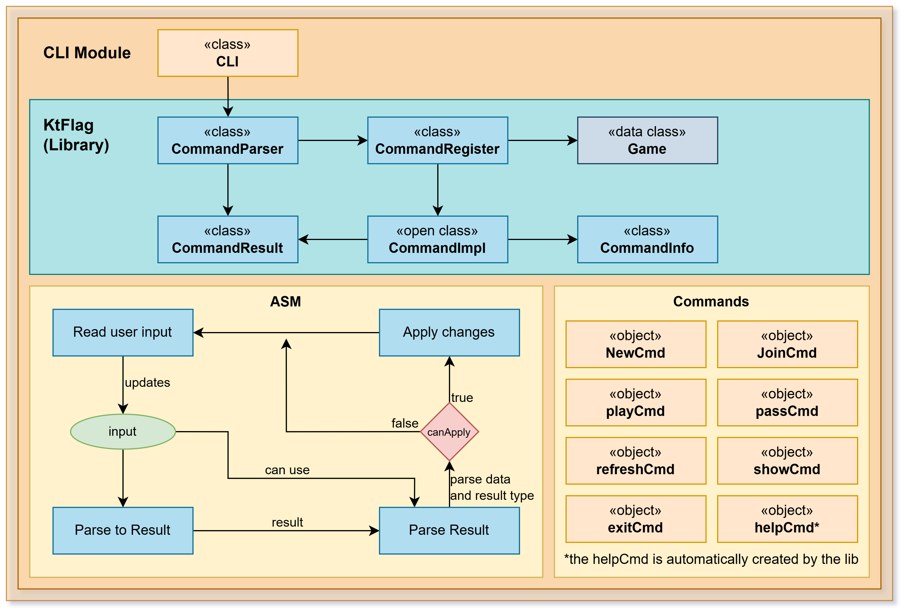

reversi-cli
Overview
A scriptable, interactive command-line interface for playing Reversi. The CLI is designed to be minimal, event-driven, and testable. It uses the KtFlag library for compact command parsing and provides a read-eval-print loop (REPL) that manages game context and command execution.
The CLI is stateful, maintaining the current game in memory and coordinating with the storage module to load and save games. It separates presentation logic (rendering the board) from command logic (executing moves), making it easy to test individual commands.

Architecture
The module is organized into two main packages:
Main CLI Package — CLI coordinator, command parsing, and rendering
Commands Package — Individual command implementations
CLI Coordinator (CLI.kt)
The main loop that:
Displays a welcome message
Creates a command parser with all registered commands
Repeatedly reads input and dispatches to the parser
Maintains the current Game context across iterations
Displays command results to the user
The CLI uses KtFlag's CommandParser for flexible argument parsing and colored output.
Command Pattern
All commands extend CommandImpl<Game> and provide:
CommandInfometadata (title, description, aliases, usage)An
execute()method that takes arguments and a game contextA return value indicating success/failure and the new game state
This design allows commands to be:
Tested independently
Added/removed dynamically
Configured with different parameters
Composed with other commands
Commands
Game Management
NewCmd (n) — Creates a new game with specified first player (# or @)
Syntax:
new # [name]Optional name saves game to persistent storage
Saves previous game before creating new one
JoinCmd (j) — Joins an existing saved game
Syntax:
join <name> [#|@]Loads game from storage by name
Optional piece type specifies which side you control
Useful for multi-player or turn-based scenarios
Gameplay
PlayCmd (p) — Executes a move at specified coordinates
Syntax:
play (row) (col)orplay (rowcol)Supports multiple coordinate formats:
play 3 4(two separate arguments)play 3A(row + letter column)play 34(row + digit column)Validates move legality before executing
Displays updated board after move
PassCmd — Passes turn when no legal moves available
Syntax:
passChecks that player actually has no legal moves
Counts consecutive passes; ends game after two
Announces winner if game ends
Game Viewing
ShowCmd (s) — Displays current board and game state
Syntax:
showShows ASCII board with piece positions
Displays both players' scores
Indicates current turn
Shows game name if applicable
RefreshCmd (r) — Reloads game state from storage
Syntax:
refreshUseful in multi-process scenarios where another instance might have updated the game
Reloads from storage and redisplays board
Game Control
TargetCmd — Toggles target mode for visual feedback
Syntax:
target [true|false|yes|no|1|0|on|off]Enables/disables highlighting of available moves
Supports various boolean representations
ExitCmd (exit, quit, q) — Terminates the application
Prompts to save current game before exit if needed
Persists game state to storage
Closes any open resources
Debug Commands (--debug flag)
DebugCmd (dbg) — Displays detailed internal state
Shows board representation
Lists player information
Displays configuration values
Lists saved games in storage folder
ListGamesCmd (lg) — Lists all saved games
Shows files in the saves directory
Helpful for testing and debugging
Configuration
The CLI reads configuration from reversi-cli.properties:
WELCOME_MESSAGE— Message shown at startupPROMPT— Command prompt symbolColor configuration (
PROMPT_COLOR,TEXT_COLOR,ERROR_COLOR, etc.)
Colors can be customized to match terminal capabilities.
Command Execution Flow
User types command with arguments
Parser matches against registered commands
Command's execute() is called with arguments and current Game context
Command validates input and executes business logic
Command returns CommandResult with success/failure and new game state
CLI displays the result message
CLI updates its game context if game changed
Integration
The CLI integrates with:
reversi-core — Game logic and types
reversi-storage — Persistence (loading and saving games)
reversi-utils — Configuration loading and utilities
KtFlag — Command parsing and rendering
The CLI is intentionally thin, delegating all business logic to the core and storage modules.
Error Handling
Commands provide user-friendly error messages:
"Game is not defined" — When operations require a game but none is active
"Invalid coordinates provided" — For malformed move syntax
"It's not your turn" — For networked games
"There are available plays, cannot pass" — For illegal pass attempts
These messages help users understand what went wrong and how to fix it.
Testing
Commands are designed to be testable:
Each command can be tested independently with mock Game objects
Command parsing can be tested without I/O
Output rendering can be captured and verified
Integration tests can simulate user input sequences